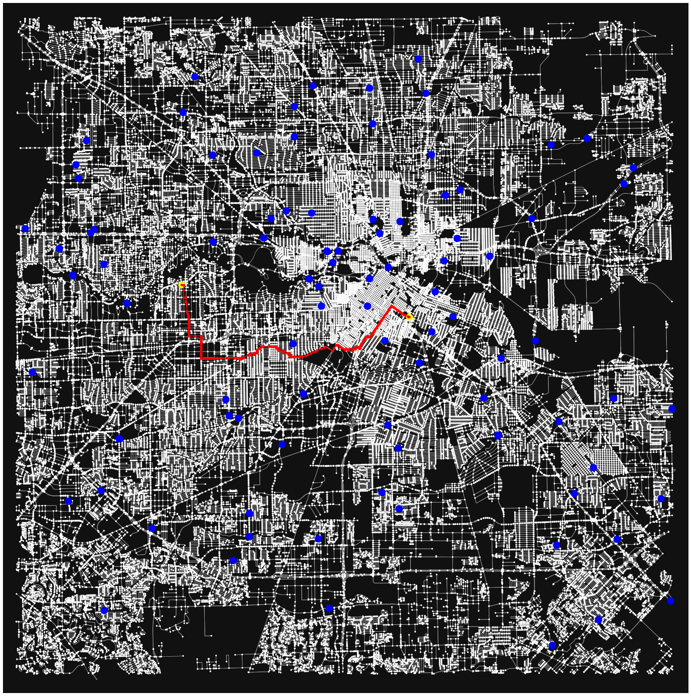
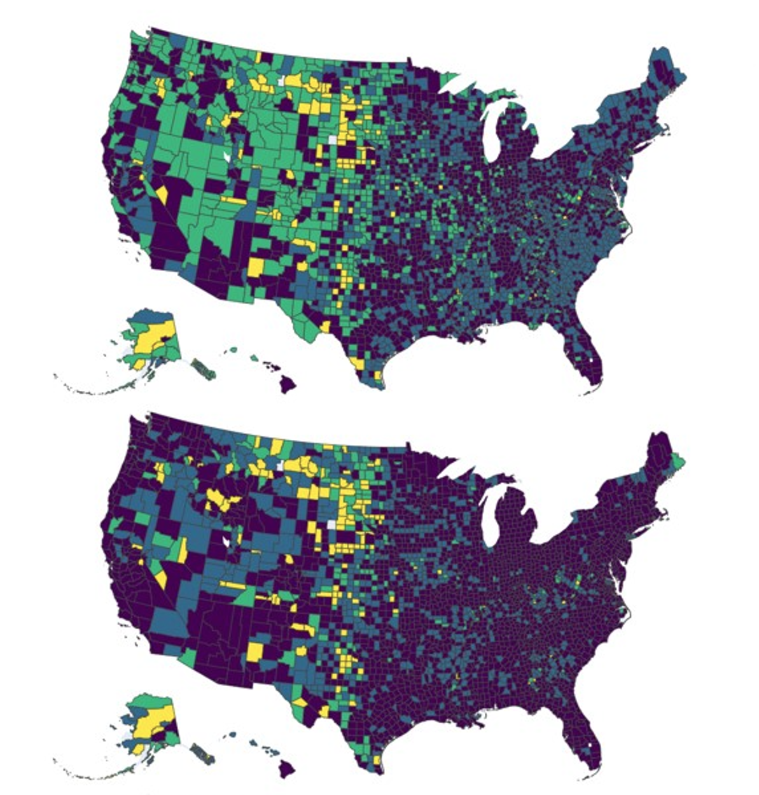
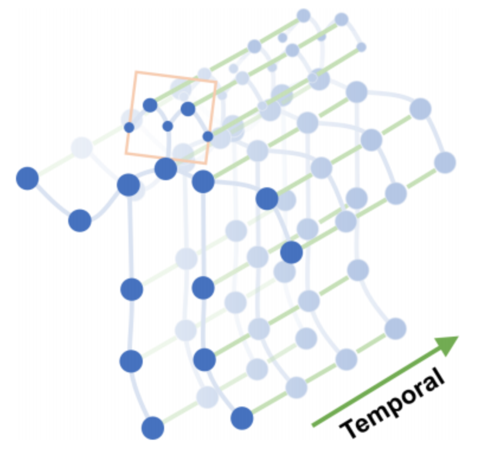

|

|
A Reinforcement Learning-based Routing Algorithm for Large Street Networks
Diya Li, Zhe Zhang, Bahareh Alizadeh, Ziyi Zhang, Nick Duffield, Michelle A Meyer, Courtney M Thompson, Huilin Gao, Amir Behzadan
International Journel of Geographic Information Science, 2023.
A novel approach to optimize evacuation routes through reinforcement learning.
|
|
|
Location-Aware Social Network Recommendation via Temporal Graph Networks
Ziyi Zhang, Diya Li, Zhenlei Song, Zhe Zhang, Nick Duffield
ACM SIGSPATIAL LocalRec, 2023.
First Place in 2022 TAMIDS Student Data Science Competition.
An extension of Temporal Graph Networks (TGNs) to effectively capture continous temporal and location information.
|
|

|
A Time-Series Clustering Algorithm for Analyzing the Changes of Mobility Pattern Caused by Covid-19
Ziyi Zhang, Diya Li, Zhe Zhang, Nick Duffield
ACM SIGSPATIAL HAniMob, 2021.
A time-lag-specific time-series clustering algorithm for analyzing the changes in mobility pattern caused by the Covid-19 pandemic.
|
|

|
Action Tree Convolutional Networks: Skeleton-Based Human Action Recognition
Wenjie Liu, Ziyi Zhang, Bing Han, Chenhui Zhu
Advances in Multimedia Information Processing, PCM, 2018.
A novel action tree-based convolutional network for the task of skeleton-based human action recognition.
|
|
{kind=link}